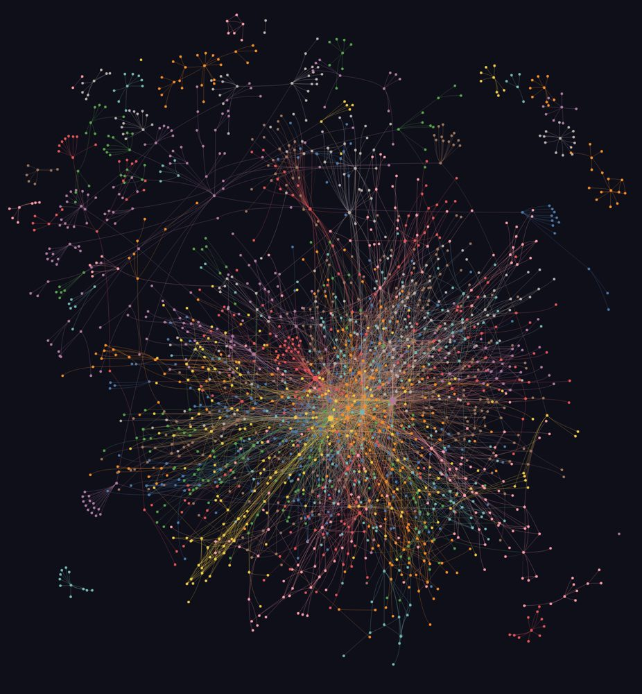
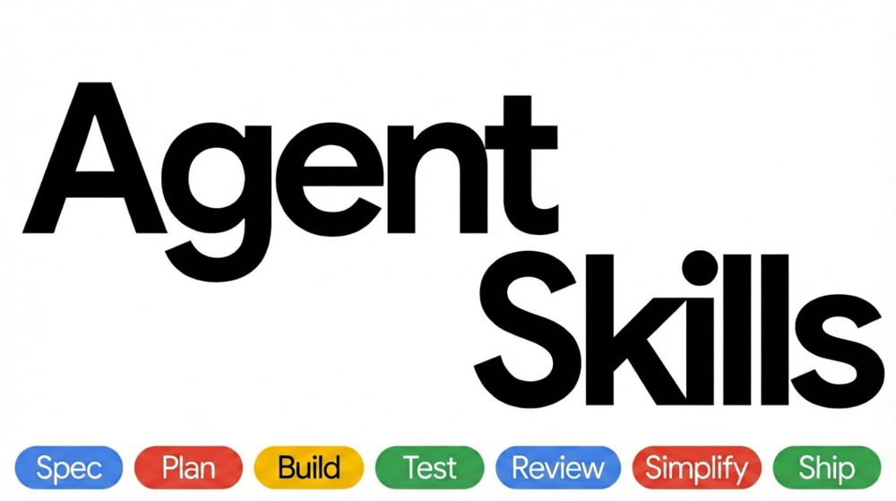
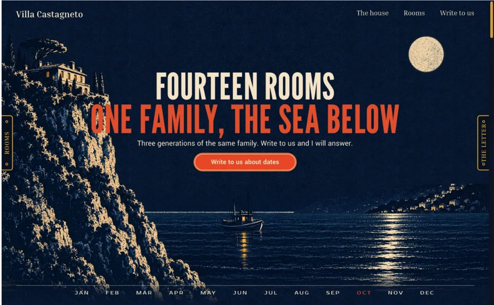

명령어 옆 '복사'를 눌러 터미널에 붙여 넣으면 돼요. 2026년 11월 10일 각 저장소 안내 기준이에요.
화면 디자인 규칙(스타일·색 조합·글꼴·UX)을 찾아서 꺼내 주는 스킬이에요.
이런 분께 디자이너 없이 화면을 만드는 분
npm install -g ui-ux-pro-max-cliuipro init --ai claude
코드랑 문서를 연결 지도로 만들어서 '이 함수 어디서 불려?'를 물어볼 수 있어요. 위 그림은 우리 자동화 코드를 그린 지도예요.
이런 분께 코드가 커져서 어디가 어디랑 이어지는지 헷갈리는 분
uv tool install graphifyygraphify install
정의·계획·만들기·검증·리뷰·출시까지 개발 단계별 작업법 25개예요.
이런 분께 AI가 짠 코드를 검토 없이 쓰고 있는 분
/plugin marketplace add addyosmani/agent-skills/plugin install agent-skills@addy-agent-skills홈페이지가 흔한 AI 페이지처럼 보이지 않게 방향을 잡고, 다 만든 뒤 실제 브라우저로 점검해요.
이런 분께 랜딩 페이지가 다 비슷해 보이는 분
npx skills add https://github.com/Leonxlnx/taste-skill --skill "design-taste-frontend"
polish(다듬기)·bolder(과감하게)로 고치고 audit(점검)로 검사하는 화면 다듬기 명령이에요.
이런 분께 AI로 만든 화면 티를 빼고 싶은 분
npx impeccable install깔기 전에 저장소에서 라이선스와 안내를 한 번 더 확인해 주세요.
각 스킬은 만든 사람의 것이고 우리와 제휴가 없어요. 그림은 각 저장소 소개 화면이고, 2번만 우리 코드 화면이에요.